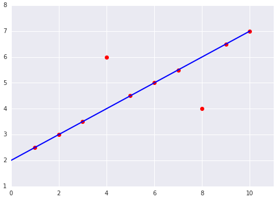

训练与损失
简单来说，训练模型表示通过有标签样本来学习（确定）所有权重和偏差的理想值。在监督式学习中，机器学习算法通过以下方式构建模型：检查多个样本并尝试找出可最大限度地减少损失的模型；这一过程称为经验风险最小化。
损失是对糟糕预测的惩罚。也就是说，损失是一个数值，表示对于单个样本而言模型预测的准确程度。如果模型的预测完全准确，则损失为零，否则损失会较大。训练模型的目标是从所有样本中找到一组平均损失“较小”的权重和偏差。例如，图 3 左侧显示的是损失较大的模型，右侧显示的是损失较小的模型。关于此图，请注意以下几点：
- 红色箭头表示损失。
- 蓝线表示预测。

请注意，左侧曲线图中的红色箭头比右侧曲线图中的对应红色箭头长得多。显然，相较于左侧曲线图中的蓝线，右侧曲线图中的蓝线代表的是预测效果更好的模型。
您可能想知道自己能否创建一个数学函数（损失函数），以有意义的方式汇总各个损失。
平方损失：一种常见的损失函数
接下来我们要看的线性回归模型使用的是一种称为平方损失（又称为 L2 损失）的损失函数。单个样本的平方损失如下：
= the square of the difference between the label and the prediction
= (observation - prediction(x))2
= (y - y')2
均方误差 (MSE) 指的是每个样本的平均平方损失。要计算 MSE，请求出各个样本的所有平方损失之和，然后除以样本数量：
其中：
(x,y)指的是样本，其中x指的是模型进行预测时使用的特征集（例如，温度、年龄和交配成功率）。y指的是样本的标签（例如，每分钟的鸣叫次数）。
prediction(x)指的是权重和偏差与特征集x结合的函数。D指的是包含多个有标签样本（即(x,y)）的数据集。N指的是D中的样本数量。
虽然 MSE 常用于机器学习，但它既不是唯一实用的损失函数，也不是适用于所有情形的最佳损失函数。
均方误差练习
请看以下两个曲线图：


对于以上曲线图中显示的两个数据集，哪个数据集的均方误差 (MSE) 较高？